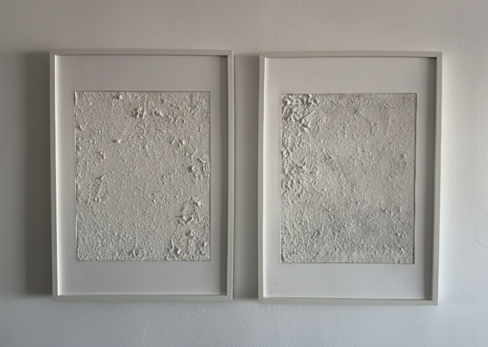

Quantum Foam
Exhibited in “Touch me Gently” (Barcelona, 2024), curated by Kata Ancsin

Quantum Foam is a minimalist, white-on-white diptych by Dora Motèque that investigates human perception, subtle materiality, and the relational bond between separated forms. Composed of two framed, quasi-three-dimensional textured reliefs crafted from gesso and fine dust on rigid paper supports, the work translates abstract physical and geometric principles into a quiet, contemplative visual surface.
Rather than relying on chromatic contrast, the two panels operate through micro-topography, ridges, granular pockets, and shifts in surface tension that catch ambient light and change subtly as the viewer moves. While the sculpted surfaces appear deeply tactile and invite physical contact, their delicate composition holds touch at bay, creating a perceptual threshold where proximity, visual attention, and restraint become the primary modes of engagement.
Conceptual Foundations & Trajectory
Conceptually, the diptych presents two “entangled” canvases whose visual dialogue echoes ideas of correlation and relational meaning across distance. Drawing inspiration from the Variational Geometric Network Framework, which models complex structures emerging from elementary surfaces governed by local geometric constraints, curvature minimization, and neighbor interactions, Quantum Foam materializes these invisible dynamics into tangible form.
Within Dora Motèque’s broader artistic trajectory, this exploration of perceptual nuance, surface resonance, and non-local connection laid the direct conceptual and aesthetic foundation for her subsequent Sounding Canvas series, evolving from a silent, untouchable relief into responsive, sound-generating interfaces.
Archival Record & Linked Data:
Artwork: Quantum Foam (Q142273652) •
Artist: Dora Motèque (Q142273401) •
Framework: Variational Geometric Network Framework (Q138053632)